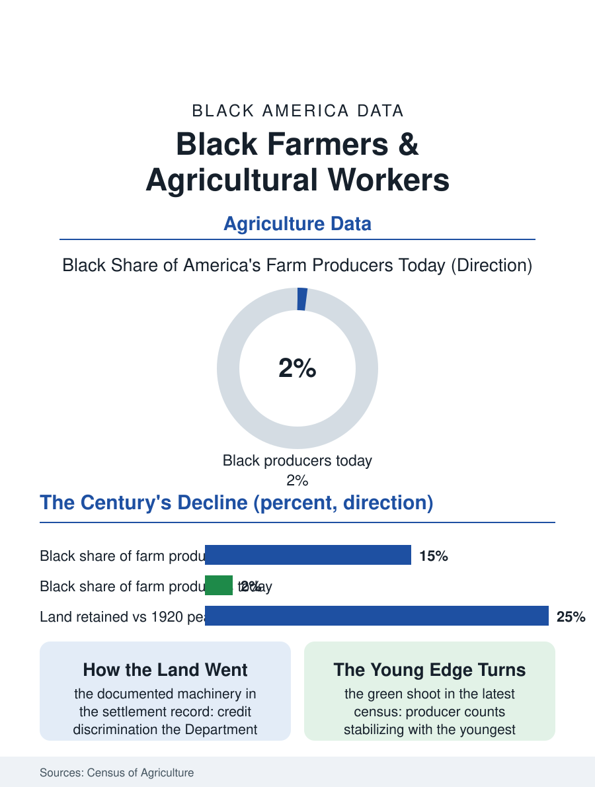

Black Employment
The Land Ledger: Black Farmers and Agricultural Workers
From a seventh of the nation's farmers to a seventieth, by machinery the government itself settled, with the youngest cohorts now turning up. The farmers file.

Black farmers are agriculture's longest-running demographic story: from a peak approaching a million operators in the early twentieth century, farming a seventh of the nation's farms, the Black farm population collapsed across the century to a few tens of thousands of producers today, on a fraction of the land, through mechanisms the Agriculture Department's own discrimination settlements have formally acknowledged. This article reads the farmers file.
The Great Land Loss
The numbers describe the century's steepest occupational decline in this atlas. In 1920 the census of agriculture counted Black farm operators at their peak, farming some fifteen percent of American farms and owning on the order of fifteen million acres; the current agriculture census counts Black producers, under the newer broader definition, in the mid tens of thousands, about one and a half percent of the nation's producers, on a few million acres. The mechanisms compose the file's documented core: the credit system's discrimination, the county committee loan denials and delays that the Pigford settlement's claims process established as a pattern of the Agriculture Department's own practice across the late twentieth century; heirs' property, the census file's fractionated land, sold at partition by the forced auction the legal system long permitted; the mechanization and consolidation that pressed all small farmers, Black and white, with the Black farmer's thinner credit access converting pressure into exit at higher rates; and the urban pull of the migration, which took the farmers' children as it took everyone's. The remaining Black farm population concentrates in the South of the land's history, Texas, Mississippi, Alabama, Georgia, and the Carolinas leading, its operators older than the national farm average, its acreage weighted to cattle, hay, and timber with the row crop operations of the Delta and the Black Belt persisting at reduced scale.
The Settlement and the Programs
The Pigford file is the policy record's center: the class action settlement of the late 1990s and its successor legislation distributed over a billion dollars to Black farmers and claimants who documented the credit discrimination, the largest civil rights settlement of its kind, while its critics and its own administrators recorded its limits, the claims denied on documentation the discrimination itself had prevented, the land already gone beyond any check's recall. The current program era has rebuilt the file's instruments: the Agriculture Department's equity commission and the debt relief programs' contested course through the courts, the heirs' property reforms of the recent farm bills, the relending and legal assistance programs aimed at the partition sale's prevention, and the land access programs for the beginning farmers of the new generation. The new generation is the file's forward datum and its surprise: the agriculture census's recent counts show Black producer numbers stabilizing and in the youngest cohorts rising, the new entrants arriving through the local food economy, the urban agriculture file's graduates, the agritourism and specialty crop niches, and the land trusts' deliberate conveyances, a demographic green shoot whose scale the next census will measure against the century of decline.
The Land as the Ledger
The farmers file closes on the land itself, which in the Black account is never only an asset: the forty acres of the freedom promise, the land bought with the washerwoman's and the porter's savings in the all-Black towns' era, the farm as the family's proof against the century, made the land loss a dispossession of meaning as well as of wealth, the wealth file's gap carrying the farms' vanished equity in its largest single historical line. The surviving farm families' relationship to the land reads in the oral histories as stewardship under siege, the timber managed for the grandchildren, the cemetery on the home place anchoring the deed's defense, the family reunion held on the land as the land's own title celebration. The new farmers inherit the meaning with the market's new instruments, the conservation easement and the carbon program joining the commodity programs in the revenue stack, and the land's defense now includes the solar lease's temptation, the energy company's offer that prices the acre against the ancestor. The agriculture census counts the Black producers in the tens of thousands and rising at the young edge. The file's last word belongs to the proportion that frames the whole: a people who were a seventh of the nation's farmers within living memory of the oldest old file's subjects, reduced to a seventieth by the documented machinery, now planting, in the data's smallest and most watched upturn, the first rows of whatever comes next.
More in Black Employment
The Black Unemployment Rate: The Two-to-One Pattern
Black unemployment runs at roughly twice the White rate — 5.5 percent against 3.3 percent in annual averages — a ratio stable across five decades of federal data. How it is measured and why it persists.
Black Median Weekly Earnings: The 80-Cent Ratio
Black full-time workers earn a median of about $900 a week — roughly 80 cents for every dollar White workers earn. The BLS earnings data by group, gender, and occupation.
Black Labor Force Participation: Working at National Rates
Black labor force participation runs at roughly the national rate — and Black women participate at higher rates than White women. The BLS participation data.
Source: U.S. Department of Agriculture, Census of Agriculture producer data; Pigford settlement records and USDA equity program documentation.